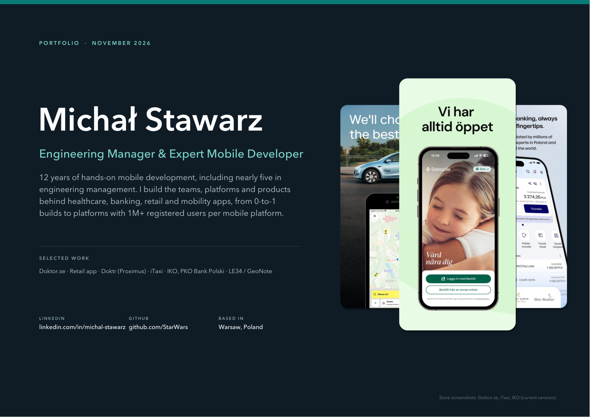

Michał Stawarz
Engineering Manager & Expert Mobile Developer
12 years of hands-on mobile development. I build and lead the apps behind healthcare, retail, mobility and banking, from 0-to-1 products to platforms with 1M+ registered users per mobile platform.
Open the case-study portfolio (PDF, 15 pages)

Apps you can open on your phone
- Doktor.seHealthcare. 4.8 stars from 114k App Store ratings. I build iOS hands-on and, as App Lead, own its mobile decisions.
- iTaxiMobility. Led iOS delivery of a legacy-app redesign.
- IKO, PKO Bank PolskiBanking. Onboarding, transfers and payments features, 2020–2021.
Also in the PDF
- A new app for one of Poland’s biggest retailers0-to-1 from RFP to a Kotlin Multiplatform architecture with native UI. Not yet public.
- Doktr (Proximus)Customer-specific end-to-end encryption in a healthcare chat.
- LE34 / GeoNote40+ white-label apps, plus games and earlier work.